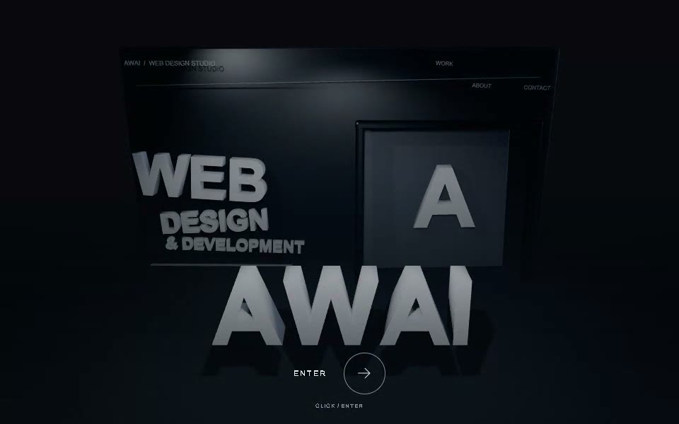

00 / 入口
Webサイトの、
見え方が変わる。
あわいは、徳島のWebデザインスタジオです。お店や会社の伝えたいことを、Webサイトにして届けます。

00 / 入口
あわいは、徳島のWebデザインスタジオです。お店や会社の伝えたいことを、Webサイトにして届けます。
01 / 縮む
何を最初に見せるか。誰に、何を知ってほしいか。お話を聞きながら、サイトの軸を決めます。
02 / 広がる
営業時間や場所、予約の入口。探している人が必要な情報へたどり着けるよう、道筋をつくります。
03 / 指で弾く
押す、送る、戻る。スマホで触るところまで、画面の一部として考えます。
上へ引いて離すと、ページが弾かれます。ボタンでも進めます。
04 / 仕上がる
伝える順番が、文字になり、配置になり、動きになる。描いた画面を、使えるWebサイトへ仕上げます。
05 / 届く
06 / 抜け出る
今のお店のこと、これから始めたいこと。まだ言葉にならないところから聞かせてください。
相談へ進む場面の情報を読み込んでいます。
ABOUT AWAI
徳島を拠点に、Webサイトの企画・デザイン・制作を行う「あわい」です。お店や会社のことを聞き、その魅力が伝わる順番と形を、一緒に考えます。
体験の中のお店は、表現のためのモデルケースです。「10日で仕上がる」は作品内の演出で、実際の制作期間のお約束ではありません。
CONTACT
まだまとまっていなくても、そこから一緒に考えます。